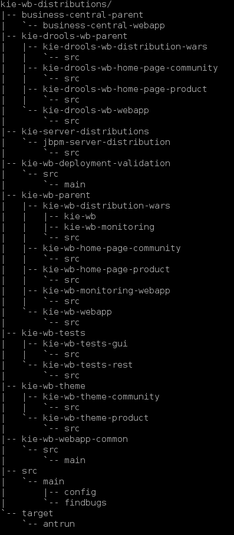
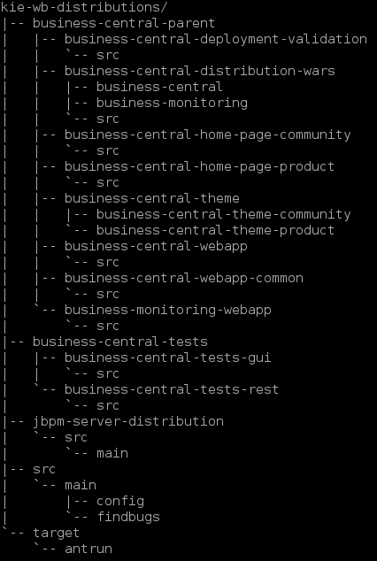

Workbench Consolidation and Profiles
KIE Workbench Consolidation: welcome Business Central
KIE (Knowledge Is Everything) is an umbrella brand offering a complete portfolio of solutions for business automation. It contains a group of related projects including Drools (business rule management system), jBPM (a flexible Business Process Management Suite) and OptaPlanner (constraint solver). These projects are generally consumed via API in Java projects.
The web tooling to interface and integrate with those projects are also provided on KIE and used to be referenced as Workbench: a web UI that you can author, manage and track business rules and processes.
Workbench used to be distributed in two different flavors: one focused on just business rules and optimizations (KIE Drools Workbench) and the other that would also include business process features (KIE Workbench).
However, with the evolution of the platform in recent years, the distributions ended up of a very similar structure, just showing/hiding menu items for the KIE Drools Workbench.
In an effort to consolidate and promote better our technology stack, we just merged a consolidation and rebranding of these workbenches to a single distribution called to Business Central (accessible via /business-central). But what was exactly done?
Workbenches directory structure
KIE workbench includes all Drools workbench features and used to be accessible via the web context kie-wb. Drools Workbench used to be accessed via the context kie-drools-wb.
In AF-1511 we renamed kie-wb-parent to business-central-parent and deleted kie-drools-wb-parent from kie-wb-distribution repository. See the new directory structure of kie-wb-distribution repository:
Before:

Now:

In that way, we consolidate all the workbenches in a single distribution called Business Central that is now accessible with the web context /business-central .
Some users may not want all the features of business central, instead, they may want to use the ‘old Drools Workbench’. For this purpose, we also introduced the concept of Profiles.
Business Central Profiles
A profile is a set of features which contains:
- Menus
- Resources that it can handle
- Specific home page
Currently, we have two profiles:
- Full: All workbench features will be enabled (default);
- Planner and Rules: Only Optaplanner and Drools features will be available.
Selecting profiles
The current active Profile can be selected using the Profiles Preferences.

Another possible way to change the profile is by using the system property org.kie.workbench.profile, which can have the following values: PLANNER_AND_RULES and FULL.
Changing the profile makes an immediate change to business central profile. You can see that after changing the profile menus are modified (some menus may be gone or new ones may appear) and you won’t be able to create some types of assets and home shorts may also be altered.
Technically speaking
Technically speaking what changes is that a new project was added (org.kie.workbench.profile:kie-wb-common-profile-api), and it contains the classes:
- org.kie.workbench.common.profile.api.preferences.ProfilePreferences
- org.kie.workbench.common.profile.api.preferences.Profile
These classes are accessible using the Appformer preferences API. These are the changes:
- The functional interface org.kie.workbench.common.screens.home.model.HomeModelProvider now receives the profilePreferences, which can be used to access the currently selected profile.
- Classes implementing org.kie.workbench.common.widgets.client.handlers.NewResourceHandler may override the method getProfiles to return a list of profiles supported by this new resource handler (by default it supports all profiles);
- The profile supported menu is accessible in the enum, which means that who wants to change the menus for that profile will have to modify the Profile enum.
Let us know what you think about these changes. This is a important step towards a better community collaboration. Stay tuned for more news!
Workbench Consolidation and Profiles was originally published in kie-tooling on Medium, where people are continuing the conversation by highlighting and responding to this story.